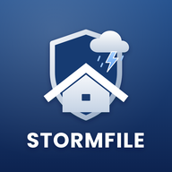

StormFile Help
Your insurance, your home and your claim, ready before the storm.
Need help? Email info@coastlinecode.com or call (228) 304-5333 and we'll get back to you. Please don't send your policy number, claim number or photos. We don't need them to help.
Where are my records stored?
Only on your phone. There's no account and no server, so no one else can see them, including us.
What happens if I lose my phone in a storm?
Your records go with it unless you've made a backup. Open Settings → Backup, choose a passphrase and save the locked backup to iCloud Drive, Google Drive or email it to yourself. StormFile reminds you when a backup is due. Do this before every storm season.
I'm getting a new phone. How do I move my records?
On your old phone, make a backup (Settings → Backup). On your new phone, install StormFile, open Settings → Backup → Restore from a backup, choose the file and type your passphrase. The backup includes full-size photos and receipts.
I forgot my backup passphrase.
We can't open a backup without its passphrase. That's what keeps it private. If you still have your phone, make a new backup with a new passphrase and write it down somewhere safe.
I forgot my PIN.
For your privacy, we can't reset a PIN. If Face ID or fingerprint is on, use it to get in, then change your PIN in Settings → Lock. Otherwise you'll need to delete and reinstall StormFile, then restore from a backup.
Photos don't show the date or GPS.
StormFile reads the date from the photo itself. Photos taken with your camera app keep that date; screenshots and some edited or messaged photos don't. GPS is added only if you allowed location for StormFile, or if the photo already has it.
How do I send everything to my insurance company?
Open the Claim tab and tap "Make the claim packet (PDF)." StormFile makes one PDF on your phone with your policy summary, photos, contents list, receipts, living expenses and call log. Read it, then share it by email or upload it to your insurer's site.
My claim is stuck. Who can help?
Open the Claim tab and tap "Claim stuck? Get help." It shows your state insurance department, emergency agency, FEMA, SBA disaster loans and flood insurance contacts.
I'm not getting storm season reminders.
Open the Storm tab, find "Seasons in your state" and tap "Add yearly reminders to my calendar." The reminders live in your calendar app, so make sure its notifications are on.
Is StormFile insurance or legal advice?
No. StormFile helps you organize your records and understand your policy in plain English. Your policy and your insurance company decide what's covered. Confirm anything important with your agent or insurer.
StormFile™ © 2026 Coastline Code LLC · Privacy Policy · Terms of Use · Open StormFile